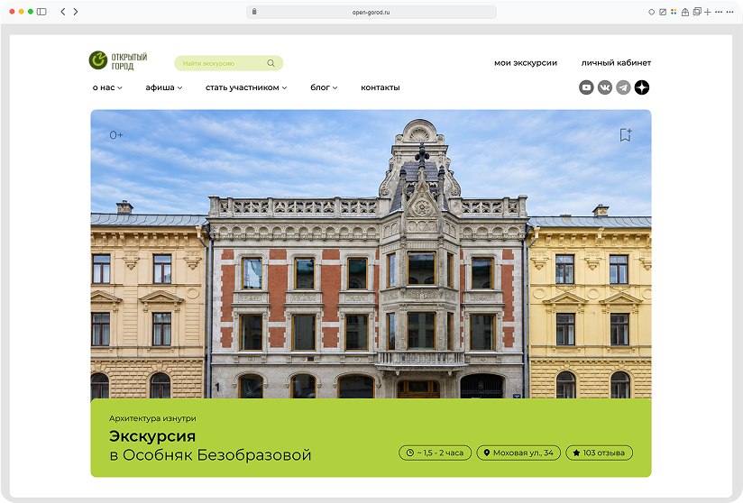
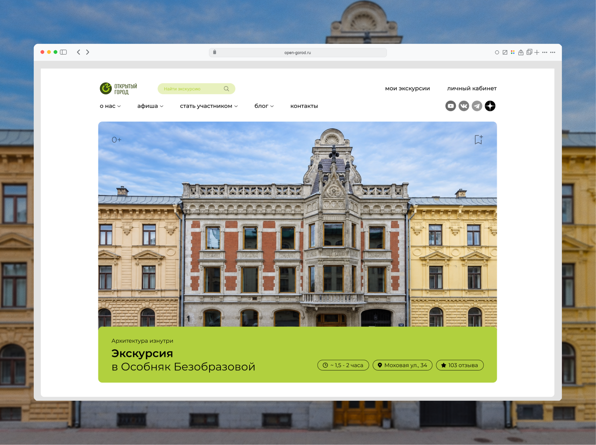
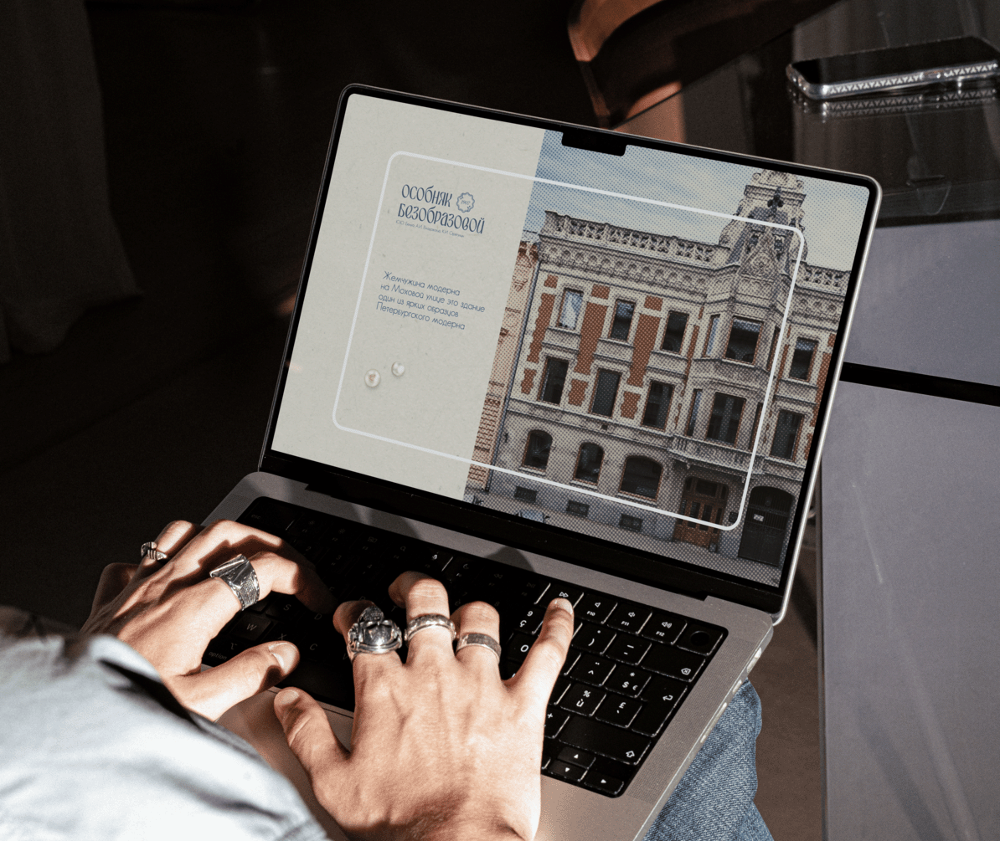
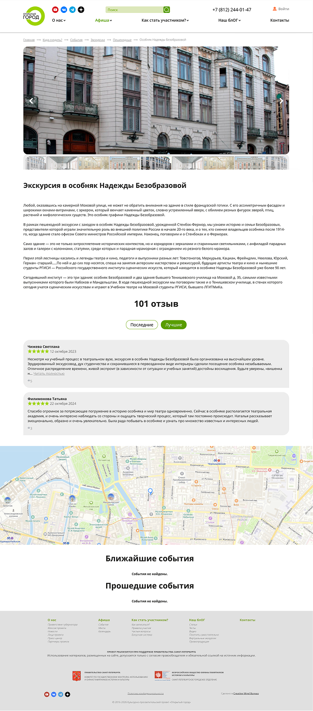
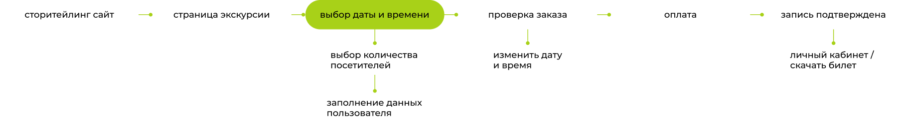
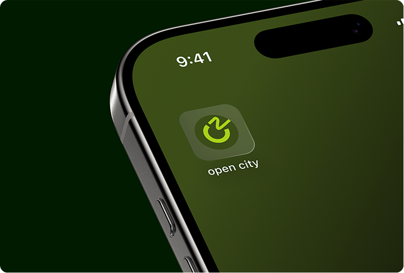

Вынесла ключевую информацию на первый экран:
название экскурсии, фотографию особняка, длительность, адрес, рейтинг и стоимость



Перейти к проекту

Я перестроила страницу экскурсии вокруг сценария покупки, сохранив узнаваемый стиль сервиса «Открытый город»
название экскурсии, фотографию особняка, длительность, адрес, рейтинг и стоимость

С помощью этой версии логотипа есть возможность использовать знак отдельно, например в иконке приложения

Пользователь проходит понятный путь: знакомится с экскурсией, выбирает дату и время, указывает количество человек, вводит контактные данные и получает подтверждение записи